01
Analyse
A thorough review of the current Canvas UI to find what to improve.
Stealth Canvas refinement
Stealth’s Canvas draws every configuration, role and encrypted channel in a customer’s network. At real-world scale it became a teal hairball of look-alike icons and grey lines. I audited it, rebuilt its icon and colour language, and cleaned up the components around it.
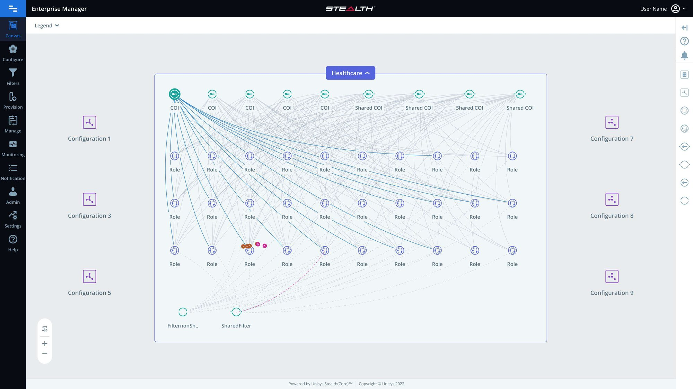
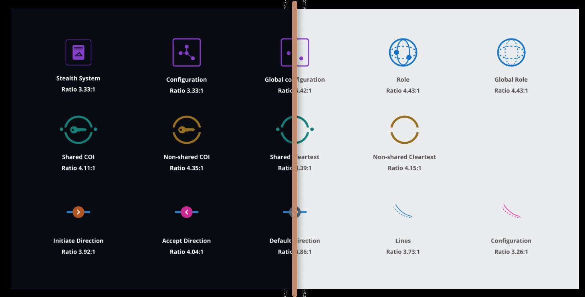
Context
I was asked to refactor and enhance the Canvas UI – visually redesigning it and cleaning up its features – so admins get a clearer view and a more capable canvas.
01
A thorough review of the current Canvas UI to find what to improve.
02
A more intuitive, more considered interface – designed and taken through to build.
03
Remove what slows admins down; keep the canvas fast to read and use.
04
Align every element with UX and accessibility standards.
05
Put the new design in front of users, gather feedback, adjust.
The starting point
Icons differed by colour alone, labels truncated into each other, and hundreds of grey lines said nothing about what they connected or whether the channel was encrypted.
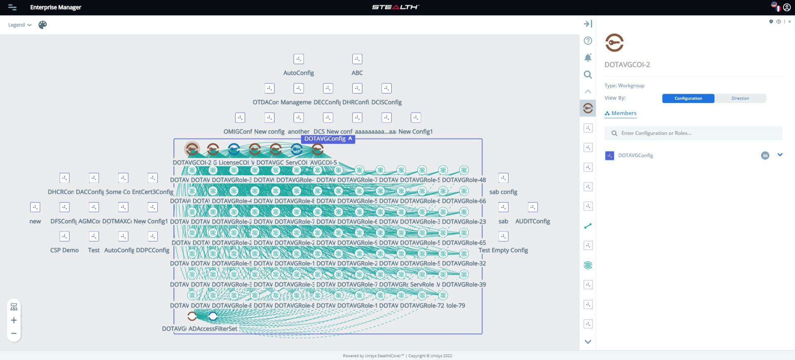
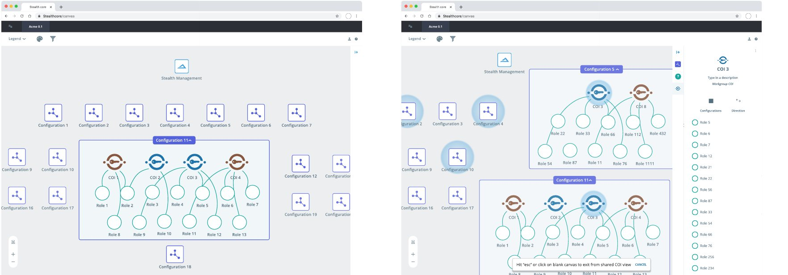
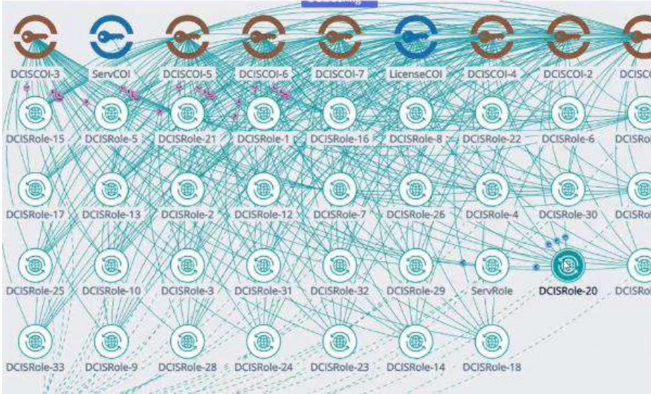
Pain points
Problem statement
The Canvas lacked visual coherence and usability.
Admins found it hard to navigate and use the canvas features, which led to frustration and slow work. It needed a visual refactor that made the view clearer, faster and more pleasant to use – improving satisfaction and productivity without changing what the canvas can do.
Understanding the system
Everything starts with a Configuration, an independent entity. A Role can only live inside one, and is where Users or Groups, COIs and Filters get associated. A COI – community of interest – is the encrypted channel two roles talk through: shared across configurations, or limited to one. Cleartext filters cover the unencrypted case.
Competitor study
Security tools – Illumio CloudSecure, Guardicore Centra, ColorTokens – alongside Dynatrace’s service map, Dyno Mapper, a site map, a concept map and Creately. How they coloured their connecting lines became the starting point for the Stealth canvas lines view.
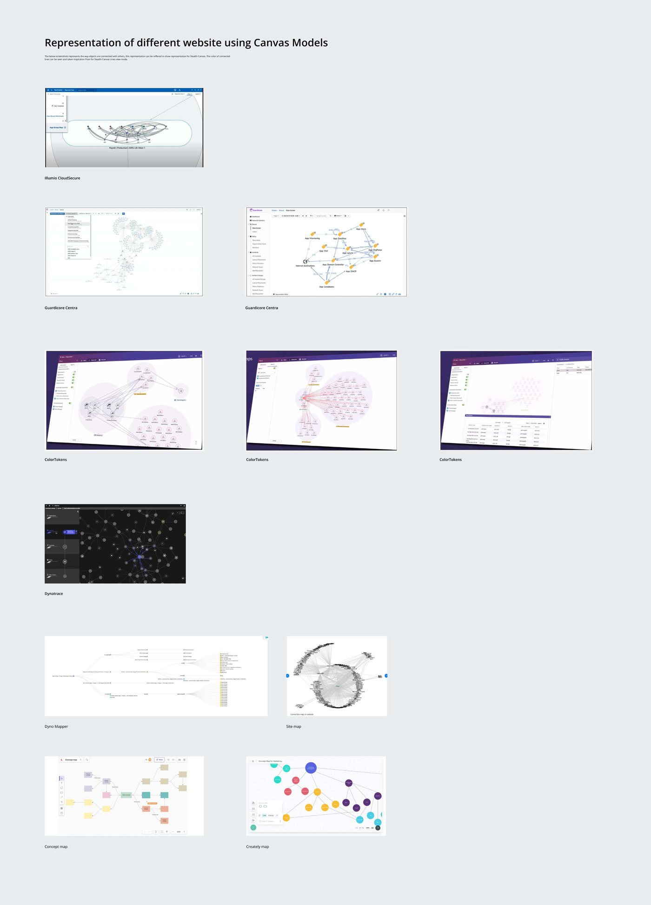
Heuristic evaluation
The pattern was clear: the canvas leaned on recall instead of recognition. Admins had to remember what a colour, an icon or a grey line meant.
| Heuristic breached | Finding |
|---|---|
| Recognition over recall | Many icons with different labels and different colours – admins were unsure what each one represented. |
| Recognition over recall | Given a task, people got stuck on the toolbar, trying one icon after another until they found the right one. |
| Visibility of system status | Grey lines don’t communicate the connection type – encrypted or not, which direction. |
| Visibility of system status | Selecting a profile showed only a grey halo; its channels got no contextual highlighting. |
| Consistency & standards | The hamburger menu showed an active state when it wasn’t selected; a “Never” label looked like a button but wasn’t one. |
| Aesthetic & minimalist design | The Stealth logo appeared twice at very different scales, and node-count labels were hard to read and cluttered the view. |
| Match with the real world | Editable titles and buttons didn’t look interactive; “Member” confused admins who were configuring profiles. |
| Error prevention | Duplicate Live Feed options made it unclear which one to use. |
Colour accessibility
Against the 4.5:1 bar, more than half of the testable colour pairs failed AA – including a teal at 2.53:1 and an amber at 1.71:1 on the light canvas. The new palette had to pass in both themes; AAA was planned for phase two.
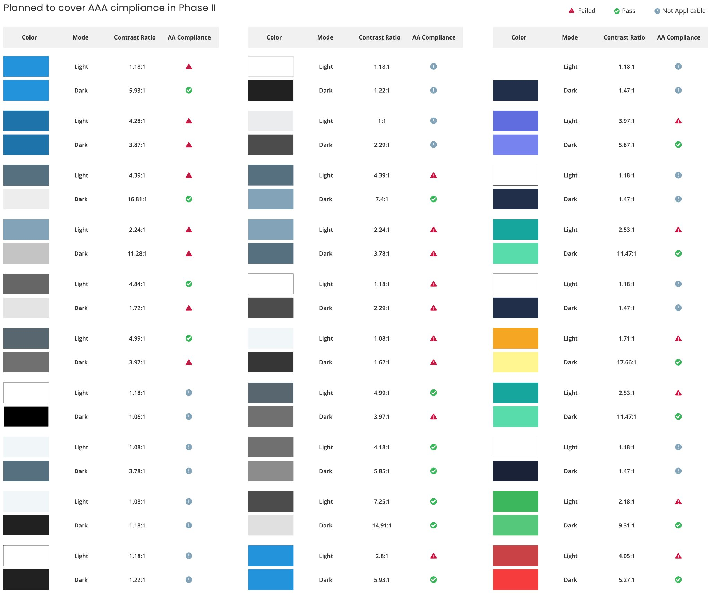
Approach
The rule underneath. Anything an admin had to remember – what brown means, what a grey line is, which icon is which – should be visible on the canvas or in the legend instead.
Configurations, roles, COIs and filters each get a distinct silhouette, so colour is never the only cue.
Teal for shared across configurations, gold for limited to one – the same rule for COIs and cleartext filters.
Solid is encrypted, dotted is cleartext, pink is an exclusive role, and direction sits on the line itself.
Unrelated channels recede; selecting an object highlights only its connections.
Icon ideation
Small details mattered at canvas scale: the COI ring was tested from 75% to 95% border radius, and 85–90% kept the key legible at small sizes without the ring closing up.
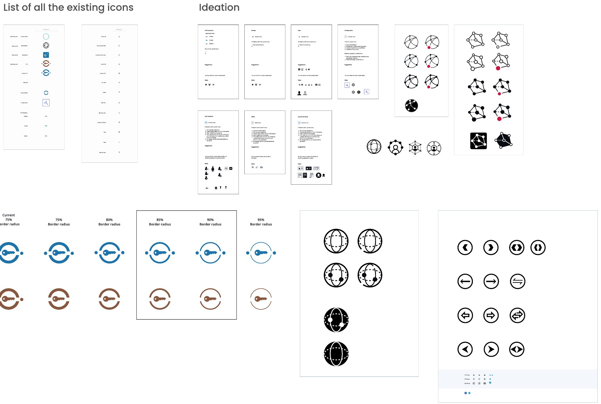
Icon specification
| Object | What it means on the canvas |
|---|---|
| Configuration | Where everything starts – an independent entity, and the parent no role can exist without. A Global configuration holds isolated roles. |
| Role · Global role | Always inside a configuration; carries its Users or Groups, COIs and Filters. If an endpoint is compromised, its role is isolated into the Global configuration. |
| Shared COI | An encrypted channel between roles, shared with other configurations. |
| COI | An encrypted channel limited to one configuration. |
| Cleartext filter set | Unencrypted communication with an endpoint that doesn’t run Stealth. Same teal/gold rule for shared/non-shared; assigned to roles only. |
| Directions | Default accepts and initiates; Initiate only starts communication; Accept only receives it – until a tunnel exists. |
| Channels | Solid for secured, dotted for unsecured; pink for an exclusive role; highlighted for connections in the selected configuration. |
This became the single reference for design and engineering – and the source the canvas legend was rebuilt from.
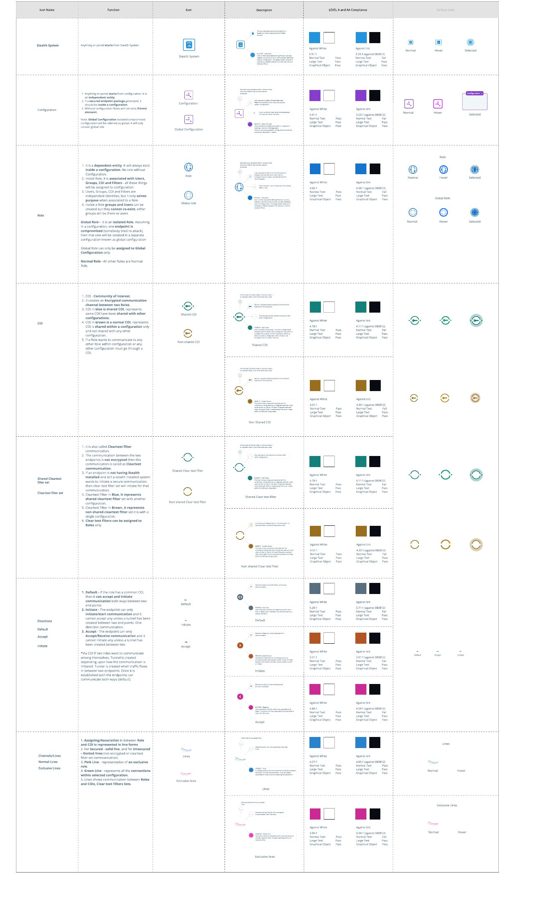
New icon colours
Before & after
Configurations scattered as tiny squares, labels truncated into each other, every channel the same teal, and a details panel that only listed members.
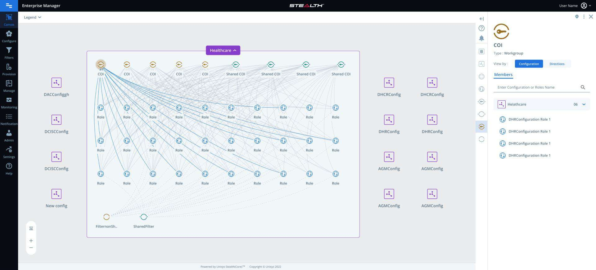
Configurations line the edges, the open one is framed and named, COIs sit in one row above their roles, and only the selected COI’s channels light up – with its members grouped by configuration on the right.
Canvas, Configure, Filters, Provision, Manage, Monitoring, Notification, Admin, Settings and Help – icons with words, so nobody hunts icon to icon.
The expanded configuration gets a frame and a name tag; COIs line up above the roles they serve, with filters at the bottom.
Unrelated channels fade to a hairline; the selected object’s channels are highlighted, exclusive roles are pink, and cleartext is dotted.
Type, a Configuration / Directions view toggle, searchable members grouped by configuration – and a legend rebuilt from the new icon set.
Visual refinements
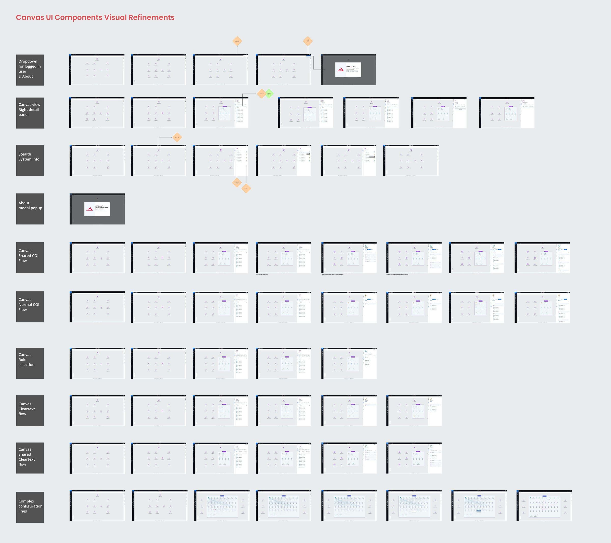
The canvas didn’t need more features. It needed to stop making admins remember.
The hardest part
Learning a deeply technical security model well enough to redraw it. I couldn’t simplify the canvas until I could explain COIs, cleartext filters and directions myself – so the object documentation came before a single pixel changed.
What’s next
System details on the canvas, configurable reorganising of canvas objects, breadcrumb states for drilling in and out, a responsive canvas module – and AAA contrast in phase two.